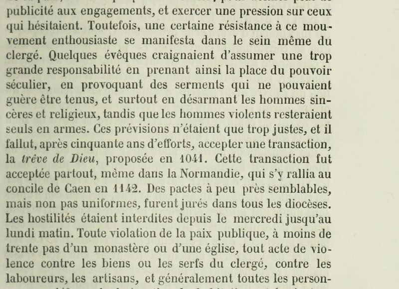
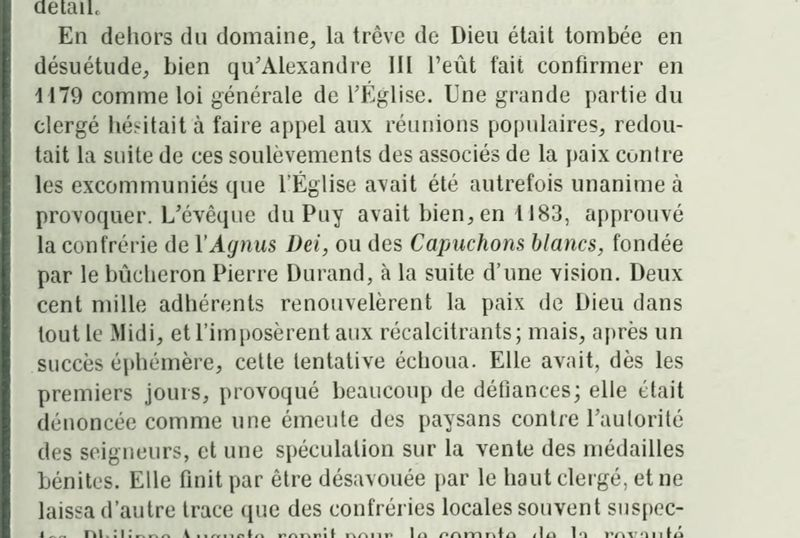

The Truce of God, 1041 (p. 87)
French: p. 87, scan n104. Highlighted: the truce and its terms.

Even within the clergy, however, there was some resistance to this enthusiastic movement. Some bishops feared taking on too great a responsibility by thus putting themselves in place of the secular power, by provoking oaths that could hardly be kept, and above all by disarming the sincere and religious, while the violent alone would stay armed. These fears were only too justified, and after fifty years of effort a compromise had to be accepted, the Truce of God, proposed in 1041. The compromise was accepted everywhere, even in Normandy, which joined it at the council of Caen in 1142 [sic]. Pacts more or less alike, though not uniform, were sworn in every diocese. Hostilities were forbidden from Wednesday until Monday morning.
Translation: this edition’s draft.
Original French
Toutefois, une certaine résistance à ce mouvement enthousiaste se manifesta dans le sein même du clergé. Quelques évêques craignaient d’assumer une trop grande responsabilité en prenant ainsi la place du pouvoir séculier, en provoquant des serments qui ne pouvaient guère être tenus, et surtout en désarmant les hommes sincères et religieux, tandis que les hommes violents resteraient seuls en armes. Ces prévisions n’étaient que trop justes, et il fallut, après cinquante ans d’efforts, accepter une transaction, la trêve de Dieu, proposée en 1041. Cette transaction fut acceptée partout, même dans la Normandie, qui s’y rallia au concile de Caen en 1142. Des pactes à peu près semblables, mais non pas uniformes, furent jurés dans tous les diocèses. Les hostilités étaient interdites depuis le mercredi jusqu’au lundi matin.
Confirmed in 1179, already in disuse (p. 127)
French: p. 127, scan n144, in the chapter on the reign of Philip Augustus and St Louis. Highlighted: Lecky’s fact.

Outside the [royal] domain the Truce of God had fallen into disuse, although Alexander III had had it confirmed in 1179 as a general law of the Church. Much of the clergy hesitated to appeal to popular assemblies, and feared the consequences of those risings of the associates of the peace against excommunicated men which the Church had once been unanimous in provoking. The bishop of Le Puy had indeed, in 1183, approved the confraternity of the Agnus Dei, or of the White Hoods, founded by the woodcutter Pierre Durand after a vision. Two hundred thousand members renewed the peace of God throughout the South, and imposed it on the recalcitrant; but after a brief success the attempt failed. From the first days it had aroused much distrust; it was denounced as a peasants’ rising against the authority of the lords, and as a speculation in the sale of blessed medals. In the end it was disowned by the higher clergy, and left no other trace than local confraternities, often suspect.
Translation: this edition’s draft.
Original French
En dehors du domaine, la trêve de Dieu était tombée en désuétude, bien qu’Alexandre III l’eût fait confirmer en 1179 comme loi générale de l’Église. Une grande partie du clergé hésitait à faire appel aux réunions populaires, redoutait la suite de ces soulèvements des associés de la paix contre les excommuniés que l’Église avait été autrefois unanime à provoquer. L’évêque du Puy avait bien, en 1183, approuvé la confrérie de l’Agnus Dei, ou des Capuchons blancs, fondée par le bûcheron Pierre Durand, à la suite d’une vision. Deux cent mille adhérents renouvelèrent la paix de Dieu dans tout le Midi, et l’imposèrent aux récalcitrants; mais, après un succès éphémère, cette tentative échoua. Elle avait, dès les premiers jours, provoqué beaucoup de défiances; elle était dénoncée comme une émeute des paysans contre l’autorité des seigneurs, et une spéculation sur la vente des médailles bénites. Elle finit par être désavouée par le haut clergé, et ne laissa d’autre trace que des confréries locales souvent suspectes.
Lecky (vol. II, ch. V, note 2): “It was confirmed as part of the general law of the Church by Alexander III. in 1179.” His text adds that “in spite of many attempts to revive it” the truce lost its force once the royal power was consolidated; Ducellier’s next sentences (p. 127–128) make the same point, with Philip Augustus taking over the idea as a “trêve du roi”.
Further down the rabbit hole
Sources that Lecky cites in the notes next to the ones that cite this page.
- Mably, Observations sur l’histoire de FranceTwo popes excommunicating each other: how the Great Schism taught Europe to doubt
- Michelet, Louis XIV et la révocation de l’Édit de NantesJurieu stands alone against Bossuet; the gentle Saurin works for Louis XIV
- Sarpi, Historia dell’origine, forma, leggi ed uso dell’ufficio dell’InquisizioneA Venetian friar on how churchmen changed their tune about princes
- Allen, Inquiry into the Rise and Growth of the Royal PrerogativeAn oath of non-resistance that outlived the Revolution by some thirty years
- An Homily against Disobedience and Wilful RebellionHell as the prison of rebels: the Church of England preaches obedience
- Aquinas, Summa theologiae, II-IIHeretics and forgers; the usurper’s subjects


Backlinks
Every place in Rationalism in Europe that links to this page (generated automatically when the site is built).
- Chapter V: note 2